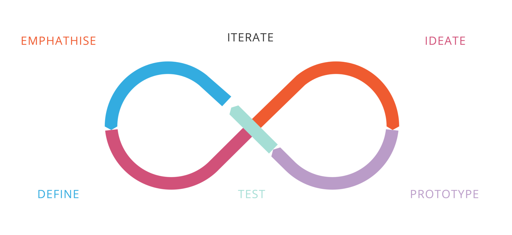

MY PROCESS
Every project is a unique journey requiring a tailored plan and strategy.
Project goals, delivery timeline, resourcing restraints, and a myriad of complex
considerations will factor into the process. I wanted to share with you the following
framework steps which are the foundation of my approach to product design and development.
I like to start my design process by investigating the problem I am trying to solve:
- Who are the users?
- What are their needs and goals?
- How are existing solutions falling short?
From there, I work to strategize an approach and ideate on solutions
before moving into an iterative design process. At every step, it is critical to test and validate my assumptions and ideas
until arriving at the best solution—a product or feature that meets the needs of the end user while delivering the optimal experience.
Empathize
Begin by understanding the problem I am trying to solve, and asking Five W’s (and one H) questions. A process of discovery and thorough research will reveal the business goals, competitor field, target users, and product ecosystem. What information do I have, Why do I need it, and How to find it out? From here, I synthesize the research findings into actionable insights that will inform the strategy ahead.
Define
Once I know where I’m going, I need to figure out the best way to get there. Working with stakeholders, marketing team, and engineering partners, I develop validation plans and design strategies and begin to frame out the shape of the project. How might I solve the core problem for our users? This is also where I begin to identify the metrics and standards by which to evaluate success at each step of the process.
Ideate
Now it’s time to brain-storm — take what I learned from the previous stages in my process and begin mapping out potential solutions and opportunities. Whether I’m sketching out experience flow diagrams on a white board or arranging feature set priorities on post-it notes, I like to start at a low-fidelity to let the best ideas emerge freely before building up in complexity and fidelity.
Prototype
As the ideas evolve, it’s essential to refer back to the original problem that I’m trying to solve. Beginning with rough journey maps, user stories, and wireframes, I gradually define the fidelity of my design solutions. Since testing and validation is a big part of my process, I like to make prototypes at from low to mid levels of fidelity and interactivity to make sure I’m on the right track.
Test
Now that we have a well-packaged, cohesive design solution, it’s crucial to gather all our assumptions and design decisions and iterate through testing. There are a variety of approaches to validating a design either qualitatively or quantitatively, and I leverage a mixture of both to measure usability, emotional response, and design effectiveness. At this stage, I’m also checking the hypotheses and planning for future iterations.
Iterate
Nothing is more exciting than when a product or feature comes to life. Of course, this is where the *real* test begins, and the best products are never completely “finished”. Keeping an eye on success metrics such as traffic, conversions, and usability metrics helps me understand how effective the design solutions are in the real world and iterate it if needed.